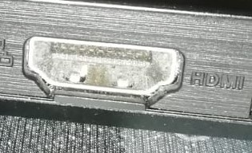
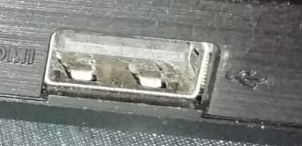
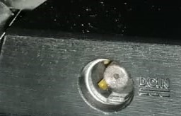

Il nome corretto per il connettore d'antenna è connettore Belling-Lee o connettore IEC 60169-2, ma molto spesso chiamato presa TV. È posto normalmente sul retro del televisore e su una presa a muro. Si utilizza per collegare il ricevitore terrestre all'antenna posta sul tetto tramite un cavo coassiale.
Il connettore jack noto anche come spinotto jack o semplicemente jack è un connettore elettrico usato per trasportare segnali per lo più audio in forma analogica in bassissima tensione.

Con il termine HDMI, acronimo inglese che sta per High-Definition Multimedia Interface, si intende un’interfaccia in grado di trasmettere dati video non compressi e audio digitale sia compresso che non.
Questo nuovo standard ha sostituito quello analogico, mandando in pensione i tipi di collegamento più datati.

USB (Universal Serial Bus) è un’interfaccia con la quale si possono collegare diversi tipi di dispositivi e periferiche al PC come: fotocamere, mouse, smartphone, tablet, tastiere, HD esterni e altro.
Oltre al collegamento plug & play, letteralmente collega e usa, i cavi USB consentono anche l’alimentazione della periferica;nel caso degli smartphone questi vengono ricaricati quando collegati al PC.

Abbreviazione di corrente continua, DC è una corrente elettrica che scorre unidirezionalmente.
I flussi elettrici in CC vanno dal terminale negativo al terminale positivo. La corrente continua è ciò che il computer utilizza per alimentare i componenti elettronici nel computer.